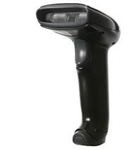
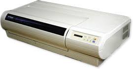
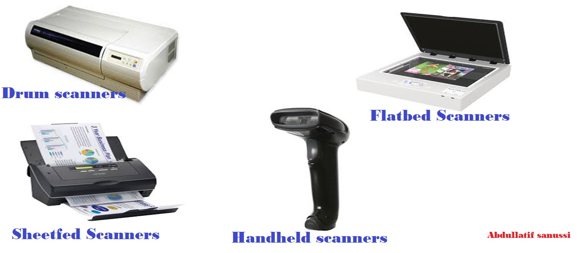

The Scanner is one of thee most inportant accessories for the computer and has been an important office equipment for the last few year
scanning technology has spread every where .
What is the scanner ?
The scanner is amachine used in the introduction of images and graphic nature to adigital image to fit the nature of the computer and even
easy to store within the file and called when needed the scanner is similar to its copy burner.
Types of Scanners
Flatbad Scanner
This type is the most commonly used and works by installing the paper to be inserted into the computer inside thee scanner light scans the paper .
Sheetfed Scanners
Works by pulling the paper inside the scanner characterized by this type of small size and is used with laptops .
Handheld Scanners
It is smaller and scans manually these scannners do not give light quality image like those provided by flatded by scanner but it my be useful in
quick text scanners .

Drum Scanners
It is used in publishing institutioins and is suoerior to all the above mentioned type the idea of its work differs from scanners .


Components Of The Scanner
CCD Charge-CCoupled Device
Mirrirs
Lens
Filters
Glass Board
a Lamp
ADC Analogue To Rigital Converter
How the scanner captures the image?:
- The document is placed face down on the transparent glass panel.
- The light source will light a white light on the document.
- Mirrors mirror the image reflected from one document to another.
- The last woman moves the picture to his lens.
- The lens in turn sheds the image on a set of filters.
- The image moves from the filters to the CCD and the CCD produces an electric signal reflecting the light falling on it.
- The electrical charge resulting from the CCD is transferred to the ADC, which converts the received electrical signal to a set of neutrons and zeros for transmission to the computer.
- The entire scan range (light source, lens, mirrors and CCD) is moved to pass the entire document using the Stepper Motor.
- The set of alphanumeric and zeros generated by the ADC are sent to the computer.